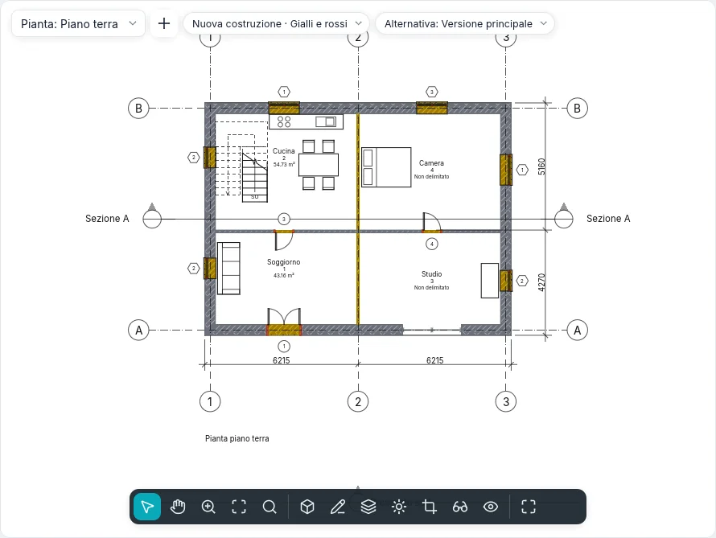

Fasi e demolizioni
Una ristrutturazione si disegna in fasi: lo stato di fatto, la nuova costruzione e, se serve, le fasi intermedie. Ogni elemento del modello è creato in una fase e può essere demolito in una fase successiva; ogni vista mostra il modello come è nella sua fase, con un filtro delle fasi che decide come si vedono gli elementi nuovi, esistenti, demoliti e temporanei. Un solo modello dà così la pianta dello stato di fatto, quella delle demolizioni, quella di progetto e la tavola comparativa a gialli e rossi.
Gli stati della fase
La fase della vista e le due fasi di un elemento ne danno lo stato in quella vista:
| Stato | L'elemento… |
|---|---|
| Nuovo | è creato nella fase della vista |
| Esistente | è creato in una fase precedente e non è demolito fino alla fase della vista |
| Demolito | è creato in una fase precedente e demolito nella fase della vista |
| Temporaneo | è creato e demolito nella fase della vista |
Un elemento creato dopo la fase della vista, o demolito prima, in quella vista non c'è.
Le fasi del progetto
Progetto ▸ Fasi ▸ Fasi (stile BIMopen: Progetto ▸ Fasi…) apre il dialogo Fasi, con tre schede. Un progetto nuovo ha Stato di fatto e Nuova costruzione.
Nella scheda Fasi del progetto ogni fase è una riga numerata, dal passato (in alto) al futuro (in basso), con Nome e Descrizione. Un clic sul numero seleziona la riga.
- Inserisci prima e Inserisci dopo aggiungono una fase accanto a quella selezionata, chiamata in sequenza (Fase 1, Fase 2…). Le fasi non si riordinano: inseriscile nel punto giusto.
- Combina con ▸ Precedente o Successiva toglie la fase selezionata: gli elementi, le viste, gli abachi e i locali che la usavano passano alla fase con cui si combina.
I nomi non possono essere vuoti né ripetuti. OK applica le tre schede insieme, in un solo passo che Annulla (Ctrl+Z) riporta indietro; Annulla del dialogo non cambia nulla. L'interruttore Anteprima nell'intestazione mostra la vista attiva con le modifiche non ancora confermate, con il filtro scelto sotto l'anteprima.
I filtri delle fasi
Nella scheda Filtri delle fasi ogni filtro dice, per ciascuno stato (Nuovo, Esistente, Demolito, Temporaneo), se gli elementi si disegnano Per categoria (come dicono stili e sostituzioni della vista), Sostituito (con le sostituzioni grafiche dello stato) o Non visualizzato (non si disegnano né si selezionano).
| Filtro predefinito | Nuovo | Esistente | Demolito | Temporaneo |
|---|---|---|---|---|
| Mostra tutto | Per categoria | Sostituito | Sostituito | Sostituito |
| Mostra demolito + nuovo | Per categoria | Non visualizzato | Sostituito | Sostituito |
| Mostra nuovo | Per categoria | Non visualizzato | Non visualizzato | Non visualizzato |
| Mostra precedente + demolito | Non visualizzato | Per categoria | Sostituito | Non visualizzato |
| Mostra precedente + nuovo | Per categoria | Per categoria | Non visualizzato | Non visualizzato |
| Mostra fase precedente | Non visualizzato | Sostituito | Sostituito | Non visualizzato |
| Gialli e rossi | Sostituito | Sostituito | Sostituito | Non visualizzato |
Nuovo aggiunge un filtro (tutto per categoria), Elimina lo toglie: se una vista lo usa il dialogo lo chiede prima, e quelle viste passano a Nessuno. Nella prima fase Mostra fase precedente non mostra nulla. Per vedere tutto senza sostituzioni si sceglie Nessuno come filtro della vista.
Le sostituzioni grafiche
La scheda Sostituzioni grafiche ha una riga per stato: Linee di proiezione e Linee di taglio (spessore, colore, modello di linea), Motivi di superficie e Motivi di taglio (visibile, motivo, colore; Cancella sostituzioni torna a quelli della categoria), Mezzitoni (linee, motivi e riempimenti sfumati verso lo sfondo, i colori dei materiali delle viste ombreggiate no) e Materiale (il suo colore ombreggiato e il suo aspetto nelle viste ombreggiate e realistiche).
Valgono dove un filtro dice Sostituito. I filtri della vista e la grafica per elemento vincono su di esse. Le predefinite seguono l'uso italiano: esistente grigio, demolito giallo tratteggiato, nuovo rosso, temporaneo puntinato a mezzitoni.
La fase delle viste
Piante, piante dei controsoffitti, sezioni, prospetti, viste 3D, piante delle aree e abachi hanno nel gruppo Fasi delle proprietà Filtro delle fasi e Fase. Una vista nuova prende l'ultima fase e Mostra tutto; Duplica vista tiene fase e filtro, poi ciascuno si cambia: lo stesso piano in due momenti. Un modello di vista può impostare il filtro (Filtro delle fasi fra le proprietà incluse), mai la fase.
Nello stile BIMopen l'etichetta Fase · Filtro in alto sulla vista apre un menu che cambia l'una o l'altro.
Le fasi degli elementi
Ogni elemento del modello (muri, porte, finestre, componenti, pavimenti, tetti, controsoffitti, colonne, scale, ringhiere, rampe, facciate continue) ha nel gruppo Fasi delle proprietà:
- Fase di creazione: quella della vista in cui l'elemento è stato creato (o incollato);
- Fase di demolizione: Nessuna, o la fase in cui è demolito; si offrono solo la fase di creazione e le successive, e Nessuna annulla la demolizione.
Annotazioni, quote, testi ed elementi di dettaglio non hanno fasi: appartengono alla loro vista. I sottomuri di un muro sovrapposto e i pezzi di un muro curvo seguono il muro intero. I progetti precedenti, con le due fasi fisse dei muri, si aprono con le fasi omonime.
Demolisci
Modifica ▸ Forme ▸ Demolisci (stile BIMopen: Modifica ▸ Demolisci) funziona in piante, sezioni, prospetti e viste 3D. Accanto al cursore compare il martello e si evidenzia ciò che si può demolire nella fase della vista. Un clic demolisce l'elemento in quella fase, in tutte le viste della stessa fase:
- un muro demolito porta con sé le sue porte e finestre;
- un elemento creato nella stessa fase diventa temporaneo;
- se il filtro della vista non mostra i demoliti, l'elemento sparisce subito.
Con elementi già selezionati, Demolisci li demolisce subito tutti, poi attende altri clic. Esc o Modifica chiudono lo strumento; ogni clic è un passo di annullamento.

I riempimenti
Dove una porta o una finestra è demolita e il suo muro resta, il foro si riempie dalla fase della demolizione in poi, con gli strati del muro: si vede in pianta, in sezione, in prospetto e in 3D. Dove un'apertura è fatta in una fase successiva a quella del muro, nelle fasi precedenti il muro è intero.
Un riempimento si seleziona con un clic, per esempio in una sezione con Mostra precedente + nuovo: il suo Tipo si cambia con un altro tipo di muro di base, per disegnare una tamponatura diversa; il riempimento delle fasi precedenti all'apertura ha sempre la struttura del muro. I riempimenti non si spostano, ruotano, riflettono, copiano né incollano: seguono le loro aperture.
Locali e abachi per fase
Un locale appartiene alla fase della vista in cui si posiziona (la sua Fase è in sola lettura): una pianta mostra, etichetta e seleziona solo i locali della sua fase, e lo stesso numero può esistere in fasi diverse. Un locale si contorna con gli elementi che esistono alla fine della sua fase: demolire un tramezzo cambia i locali di quella fase e delle successive, non quelli dello stato di fatto. Copia negli appunti un locale da una vista e Incolla nella vista attiva in una vista di un'altra fase: il locale passa a quella fase con le stesse proprietà.
Un abaco ha Fase e Filtro delle fasi come le viste (in Nuovo abaco la fase proposta è l'ultima): le righe sono gli elementi come sono in quella fase, quelli che il filtro mostra. Mostra precedente + demolito elenca le porte da rimuovere, Mostra nuovo quelle da comprare. I campi Fase di creazione e Fase di demolizione si mostrano, si ordinano, si filtrano e si modificano dalla cella.
I filtri della vista hanno regole su Fase di creazione e Fase di demolizione: uguale o diversa, e minore di / maggiore di per prima o dopo nell'ordine delle fasi.
Legende di fase
Un componente di legenda ha la proprietà Stato della fase: con Esistente, Demolito, Nuovo o Temporaneo il campione si disegna con le sostituzioni di quello stato, accanto al suo testo.
Scambio
- IFC: con un progetto a fasi, Esporta ▸ IFC chiede la Fase da esportare (l'ultima proposta). Si scrivono gli elementi che esistono in quella fase, ciascuno con lo stato (Status: NEW, EXISTING, DEMOLISH, TEMPORARY) nel set di proprietà comune della sua classe e le sue due fasi per nome. Aprendo un IFC, gli oggetti con questo stato prendono le fasi corrispondenti del progetto.
- DWG e DXF: in Esporta formati CAD l'opzione Stato della fase nel nome del layer aggiunge al layer della categoria il suffisso dello stato (-EXST, -DEMO, -NEWW, -TEMP): un muro demolito va su A-WALL-DEMO.
La mappatura delle fasi dei modelli collegati arriverà con i modelli collegati.